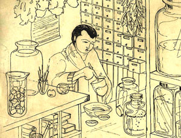

In search of "Dragon Bones"In 1899 a man called Wang Yirong, a director in the Imperial Academy of State Education in Beijing became ill with malaria. His doctor sent to the local apothecary for the best known treatment of malaria - ground up dragon bones! |